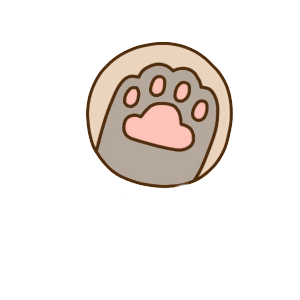

Pusheen is a cartoon cat who is the subject of comic strips and sticker sets on Facebook. Pusheen Cat was created in 2010 by Claire Belton and Andrew Duff for a comic strip on their website, Everyday Cute. The original comic strip series included characters modeled after Belton, Duff, their dog named Carmen, and Pusheen, a chubby gray tabby cat based on Belton's parents' cat. Her name stems from the Irish word puisín, which means kitten in Irish. When the "I am Pusheen Cat" book released, it sold out quickly.
History
Pusheen first appeared in 2011 in the comic "Pusheen Things" on Claire Belton and Andrew Duff's website, Everyday Cute.In 2011, Belton and Duff launched a spin-off site dedicated to Pusheen. In 2013, Belton published I Am Pusheen The Cat, a collection of comic strips featuring Pusheen. Pusheen has become well known for appearing in sticker sets on Facebook. On Facebook, stickers are images that can be attached to personal messages or comments. The feature, including a set of Pusheen stickers, was introduced to iOS in April 2013, and added to the main website in July of the same year.In an article for PC Magazine on emoji and unicode, Sascha Segan referred to Pusheen as Facebook's "proprietary emoji", being used as a form of vendor lock-in.
Impact
Pusheen is an example of the popularity of cats on the Internet. An exhibition at the New York City Museum of the Moving Image examined the phenomenon, highlighting Pusheen alongside other celebrity cats such as Grumpy Cat and Lil Bub.The Facebook page for Pusheen has over 9.1 million fans as of February 2016.The brand has expanded; Pusheen merchandise is available for purchase.
Reference
From Wikipedia.org
